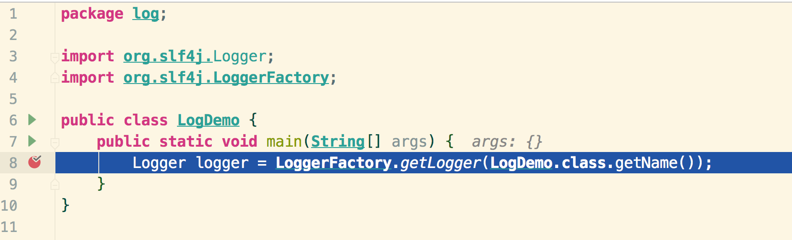
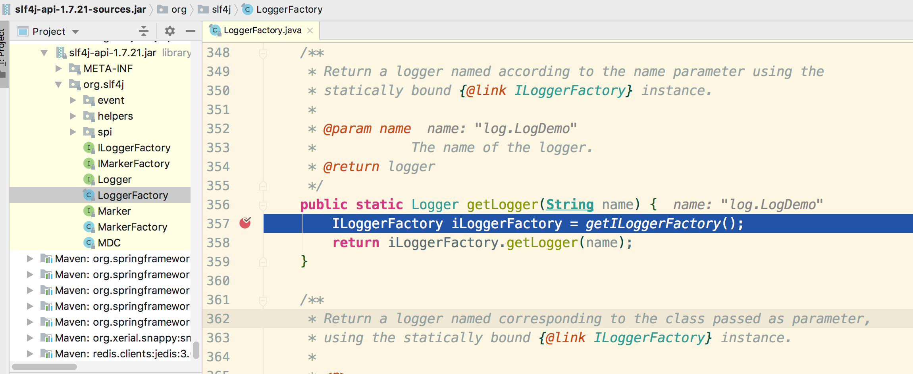
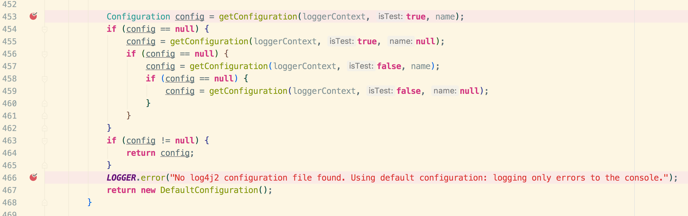
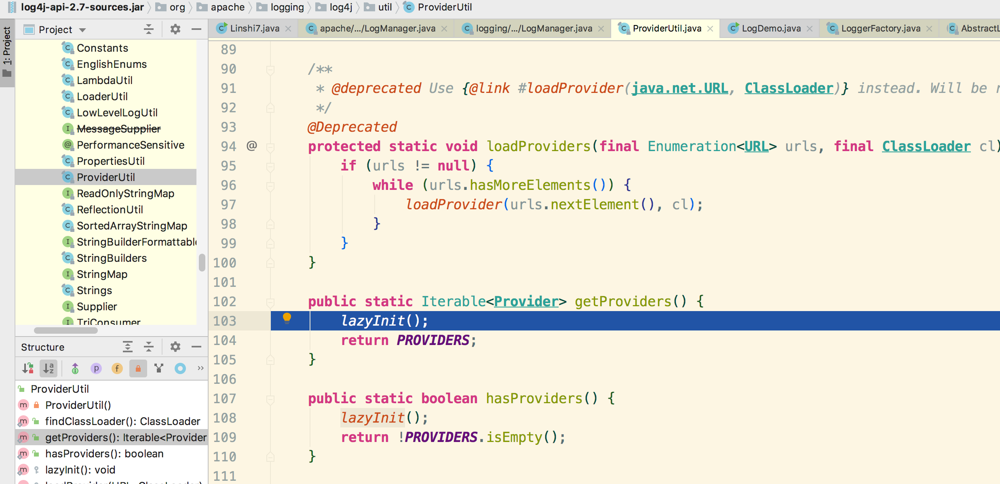
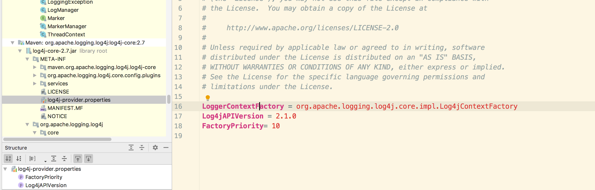
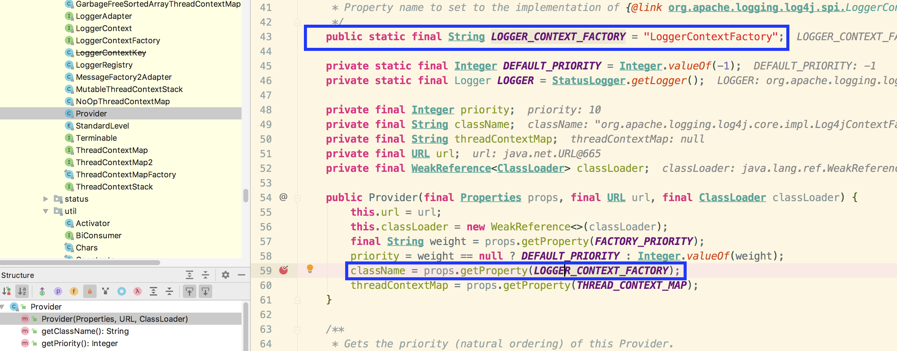
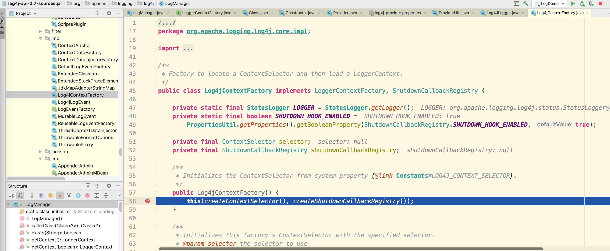
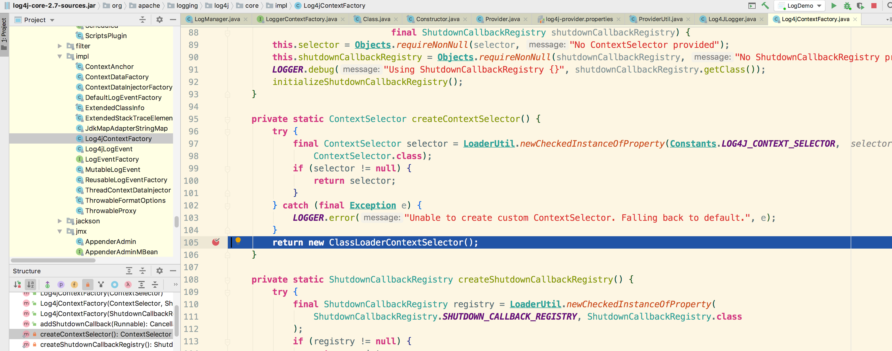

原文连接:https://www.cnblogs.com/xiaoxi666/p/11426259.html
前言
在实际开发项目中，日志永远是一个绕不开的话题。本系列文章试图以slf4j和log4j2日志体系为例，从源码角度分析日志工作原理。
学习日志框架，首先要熟悉各类日志框架，这里推荐几篇文章，就不再赘述了。
https://www.cnblogs.com/rjzheng/p/10042911.html
https://www.cnblogs.com/chanshuyi/p/something_about_java_log_framework.html
对于log4j2，配置文件有几类：properties、xml、json/jsn以及yaml/yml，平常我们用xml居多。
一般情况下，我们会创建log4j2.xml放到项目的/resources文件夹下。大部分使用maven管理依赖的项目也可能分环境配置，不同环境读取不同的log4j2文件，这时它一般在/profiles/${env}/文件夹下。
大多数人，应该是“借鉴”其他项目，把配置复制过来，再修修补补。然而你是否思考过：
- 为什么要写这个配置文件？不写的话会出什么问题？
- 这个配置文件的命名有什么规定吗？为什么我们平时见到的都是log4j2.xml，而不是其他名字？
- 这个配置文件是如何被加载的？
回答以上问题，就是本文的初衷。
提示
1. 本文会用调试的方法，以log4j2配置加载过程为主线，描述其工作流程；影响不大的旁枝细节会忽略，有兴趣的读者可自行查阅源码。
2. 多图预警！用电脑查看效果更佳。
3. 尽量动手操作，以加深理解。
环境准备
阅读源码前，请确保引入了slf4j和log4j2依赖包，以及适配包。以maven为例，本文示例程序引入了：
<!-- slf4j -->
<dependency>
<groupId>org.slf4j</groupId>
<artifactId>slf4j-api</artifactId>
<version>1.7.21</version>
</dependency>
<!-- bridge -->
<dependency>
<groupId>org.apache.logging.log4j</groupId>
<artifactId>log4j-slf4j-impl</artifactId>
<version>2.7</version>
</dependency>
<!-- log4j2 -->
<dependency>
<groupId>org.apache.logging.log4j</groupId>
<artifactId>log4j-core</artifactId>
<version>2.7</version>
</dependency>
<dependency>
<groupId>org.apache.logging.log4j</groupId>
<artifactId>log4j-api</artifactId>
<version>2.7</version>
</dependency>
源码
首先，我们新建一个java文件，打断点开始调试。

进入getLogger方法。可以看到，在LoggerFactory获取具体的Logger工厂。

进入getILoggerFactory方法。

这里的一堆逻辑先不要管，我们最终会进入418行。

接下来进入真正的日志绑定环节。由于我们只引入了log4j2，这里会直接找到它，继而绑定。StaticLoggerBinder就在log4j2的包中。

程序走到61行，可以看到这里使用饿汉方式实现了单例。41行实例化StaticLoggerBinder，会跳到53行，我们进去看看细节。

可以看出Log4jLoggerFactory继承了AbstractLoggerAdapter这个抽象的日志适配器。这个抽象适配器中定义了若干方法，别急，马上会提及。
回到LoggerFactory，通过方法getLoggerFactory，我们会得到刚刚创建出来的Log4jLoggerFactory：

接下来，我们进入log4j2的getLogger环节。

可以看到getLogger是个接口方法，并且有3个实现。
还记得我们刚才获取到的Log4jLoggerFactory吗？AbstractLoggerAdapter是它的父类，由此我们会走到AbstractLoggerAdapter的getLogger中。

getContext是AbstractLoggerAdapter的抽象方法，因此，我们下一步会走到Log4jLoggerFactory的getContext方法中。

这里用反射定位到我们的日志（anchor中文译为"锚"，可以理解为类似文件句柄一类的东西），这里得出的anchor为""，因此会进入后面的语句。

最终，我们会拿到一个AppClassLoader，LogManager会利用这个类加载器获取上下文。
进入getContext看看：

请注意：这里的factory是Log4jContextFactory，它是在LogManager中的静态代码块中初始化的，具体细节后面会补充。
现在，我们先进入getContext看看：

这里的getContext是ContextSelector接口中的方法，下一步会进入ClassLoaderContextSelector中的getContext中。至于slector是怎么初始化的，我们放在后面一起说。

下面几步都是上下文相关操作，不再贴出，最终会回到这里：

然后走到152行的ctx.start方法，进去看下：

到现在，终于要开始加载配置了！！！
接下来几步比较直观，贴图示意：


在这里，先创建ConfigurationFactory的实例，然后获取配置。至于ConfigurationFactory的实例创建，这里不再说明，可自行查看。
接下来，进入getConfiguration方法：

进入该方法：

请注意，这里的getFactories已经很明显地告诉我们，这里有4个工厂（均继承自ConfigurationFactory ），分别处理前文提到的四类配置文件类型：properties、xml、json/jsn以及yaml/yml。调用factory.getSupportedTypes()方法即可获取到各类后缀。以xml为例：

其他类型文件同理。
好了，回到加载配置的方法，可以看到426行代码判断是否支持所有文件类型。其实最终的核心代码是453~467行：

这里尝试用不同的条件获取config，如果最终config为null，就会打印error日志，告诉你没有找到配置文件。由于目前我们还没有配置，就会走到466行。
现在，你可以在/resources路径下增加一个log4j2文件，填写一下简单配置，就会在459行得到config了。我们来看看getConfiguration的细节：

可以看出，这里就是按照各种条件拼接处配置文件的名字。
以最常见的log4j2.xml为例：

上图中，我们已经得到了配置文件的名字：log4j2.xml。
同时可以看到，prefix为log4j2，suffix为文件后缀。
其中prefix（505行）是写死在ConfigurationFactory中的：
所以，我们配置时定义的文件名，需要遵循规范，而不能随意命名。
现在有了配置文件名，就可以加载了：

进入方法内部： 
现在，url已经获取到了。它的值是"项目路径/target/classes/log4j2.xml"。
后面的事情就是从文件加载内容（ 517行，涉及到类加载器的知识，请自行查看）。
再然后，就是读取xml文件的内容啦：


走到这里，就开始读取xml文件了。这部分内容且待下回分解。
遗留问题：LoggerManager的factory及其内部的selector是怎么初始化的？
其实，在调用LogManager.getContext(cl, false);之前，LoggerManager中的静态代码块会提前被调用，我们看一下：

我们看89~100行代码即可：

进入方法ProviderUtil.getProviders()内部查看：


可以看到provider是使用懒汉方式实现的单例（你会发现89行代码中ProviderUtil.hasProviders()方法执行时已经创建过了，因此这里直接返回。注意创建过程有个细节，后面要用到），用于确定各个factory的优先级。
我们重点看91行代码内部细节：


在96行，加载class，98行又将其转换为LoggerContextFactory的子类（也就是Log4jContextFactory）。
那么问题来了，className是啥，为啥它指定了Log4jContextFactory？
其实，在前面创建Provider实例时，构造器中会读取log4j-core中的配置文件，其中就包含className对应的属性：




就这样，得到了className：org.apache.logging.log4j.core.impl.Log4jContextFactory。
接着往下走：

可以看到这里会用反射的方式实例化Log4jContextFactory对象，会调用Log4jContextFactory的无参构造器：

createContextSelector方法，就会初始化selector啦：

后续的初始化细节就不再展开啦。
最后会走到这里：

至此，factory创建完毕。
现在，你应该可以回答文首的三个问题了吧？
总结
本文通过调试，描述了log4j2日志配置加载的主线（忽略了很多细节，比如可以配置path等等），后续的文章将会进一步描述配置文件的解析过程。
希望读者通过本文，能够对log4j2的配置加载过程有更为深入的理解。
最后，作者水平有限，难免错漏，欢迎指正及交流，共同进步。